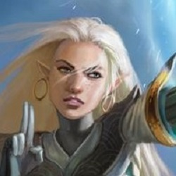

Heather
Jumping into the air from very high places has always been a thing for Heather ... literally and metaphorically. Truly committing to something that is scary (such as jumping from a plane or leaping headfirst into learning a new skill) requires repeated and deliberate surrender and is an essential quality necessary in bending air). This requires participation in a dance ... a dance between control and surrendering, which Heather finds exhilarating and incredibly meaningful. More than any other element, air is aware that beyond itself lies the unknown. Believe that when you leap the appropriate net will appear.
Tommy
|
Code bender-in-training. I relate to water bending because I value adaptability and open-mindedness. I have a Bachelor's in Biochemistry and Biophysics, and I love learning about the nuances and subtleties in all aspects of life cause it makes the world a more interesting place for me. I enjoy programming because it has the nuances and logic that I like, and I am able to have more control over it (compared to biochemistry). As for my hobbies, I really enjoy playing piano, non-running physical activities, and anime! |
Nairobi
First and foremost I love cooking for anybody. Even if you were my enemy I would still enjoy cooking for you. I love the outdoors, physical activity, hiking, camping, sports as well as indoors … sewing, knitting, drawing, coding and writing. There's so much to say I have yet to find anything I don’t like. I was born and raised in Kenya. I lived there for seven years until my day moved me to London where I lived for three years. I have moved around many countries within Africa. I’ve lived in Madagascar, Somalia, Ethiopia and Egypt. I speak eight languages fluently, which I do not mind speaking for you all if you want to hear. Right now I reside in Portland, Oregon and have been here for 16 years. I lost count after eight. I have done many things over the years, like going to the american school system like middle school, eight different high schools (probably more) and getting into a nine month culinary program. I received an Associates Degree in Psychology in Mount Hood. I actually hate psychology and went to undergrad in Biology and Nursing. There I went to Med School for three years, dropped out in my third year, which was a few years ago. From there I stopped pursuing things for the money and started doing things that I see myself doing forever, and that's why I am here at the beautiful Alchemy Code Lab.
Marty
Marty is a programmer with a passion for creativity. I enjoy reading and fantasy roleplaying games, my imagination helps me escape from reality. I have been playing Ultimate Frisbee competitively for 10 years, the community is so loving that I always find a way back in! I have a masters in Earth and Environmental Sciences where I studied the physics of snowflake growth despite the fact that some people identify snowflakes as the mortal enemies of the Fire Nation. I found my passion for programming during my Masters program, I fell in love with building and maintaining data processing software and now my twisted tortuous journey has put me in the path of Alchemy! I can't wait to continue developing my own skills as a Code Bender!!